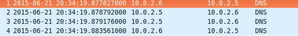
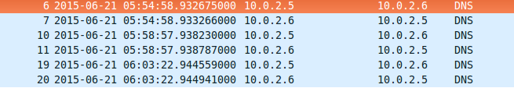
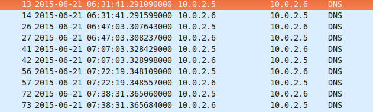

組員： 蔡存哲 / 周紀寧 / 鍾毓安
$ sudo apt-get install bind9
設定檔位於 /etc/bind
打開主要設定檔/etc/bind/可看到它是個模組化的設計，事先幫你區隔開不同功能的檔案
// 一些關於伺服器本身的選項
include "/etc/bind/named.conf.options";
// *留給我們自己設定dns的檔案
include "/etc/bind/named.conf.local";
// 預設的一些zone，例如root dns server跟localhost
include "/etc/bind/named.conf.default-zones";
在/etc/bind/named.conf.local裡設定（也是可以寫在其他檔，但得額外include到named.conf）
zone "test.org" in {
type master; // 是 master 還是 slave
file "/etc/bind/db.test.org"; // 設定檔位置
};
在/etc/bind/db.test.org（在zone設定檔中指定的位置）裡設定
警告！實際上無法在db檔中用 // 來註解
$TTL 60
// @ 代表zone自身，在這裡就代表test.org
@ IN SOA ns.test.org. admin.test.org. (
2015062201 // 序號，習慣上以年、月、日、第幾次更動為編號
5 // slave 多久去跟 master要一次資料
1 // slave 要求失敗之後多久再要一次
86400 // 失效時間，若一直失敗持續多久就不連了
600 // 反向快取時間，快取"沒這個domain" 的時間
)
@ IN NS ns.test.org.
@ IN A 100.100.100.1
ns IN A 10.0.2.6
blog IN A 100.100.100.3
$ sudo service bind9 start
$ dig blog.test.org @localhost
為什麼要主從式？
Ans: dns 伺服器有很多台的時候，手動一台一台設db很痛苦，所以希望可以更新一台就可以順便更新其他
主從式架構如何進行同步？
Ans: 主人更新時會主動通知，僕人也會定時去問
剛剛設定的那台就是主人，但增加僕人時也該讓主人知道它的存在
1. 在/etc/bind/named.conf.local 設定某個zone給予其他ip擷取的權限
zone "test.org" in {
type master;
file "/etc/bind/db.test.org";
allow-transfer { 10.0.2.5; }; // 可接受10.0.2.5的要求
};
2. 在/etc/bind/db.test.org 設定另一 slave 的紀錄，當reload時，主人就會觀看此處有誰也是name server，而去提醒它
@ IN NS ns.test.org.
@ IN NS slave.test.org. // 新增slave為一NS
@ IN A 100.100.100.1
ns IN A 10.0.2.6
slave IN A 10.0.2.5 // slave的ip
blog IN A 100.100.100.3
僕人反而比較輕鬆，只要知道主人是誰就好
在/etc/bind/named.conf.local中設定zone
zone "test.org" IN {
type slave;
file "/etc/bind/db.test.org";
masters { 10.0.2.6; }; // 主人是10.0.2.5
};
在master reload 時都會主動告知slave
$ sudo service bind9 reload

slave 根據 soa 設定的refresh 時間進行反覆查詢，然而並不精準，以下為設定refresh為5秒及二十分鐘，擷取封包的結果
 